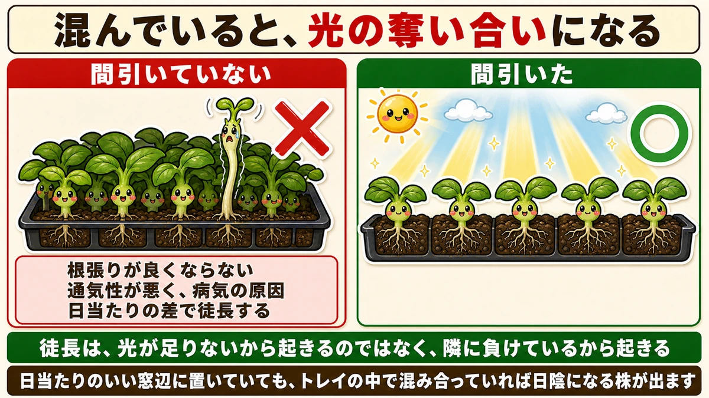
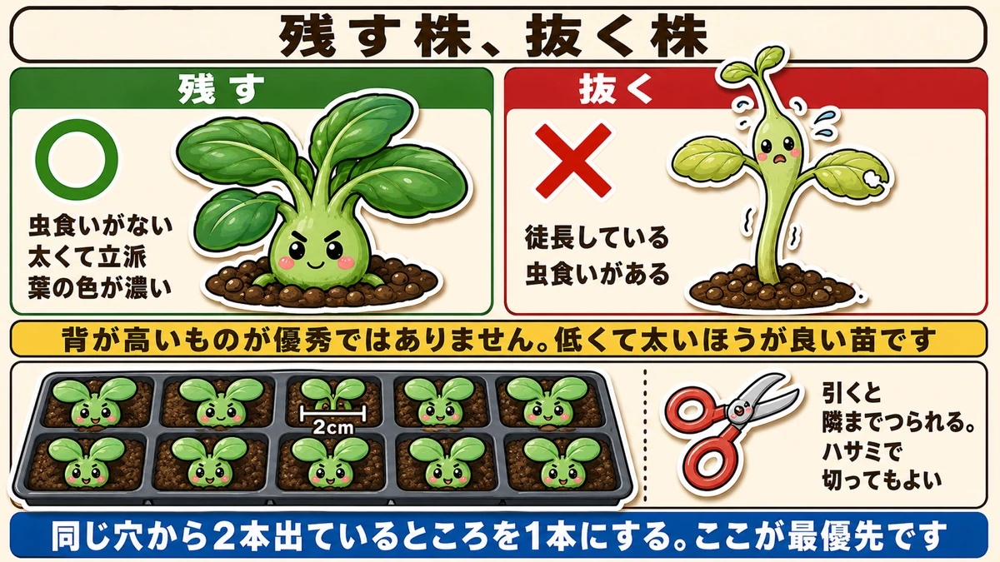
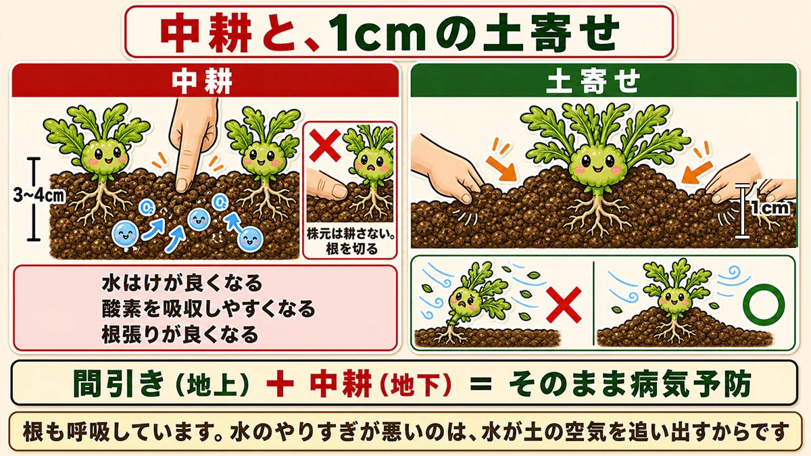
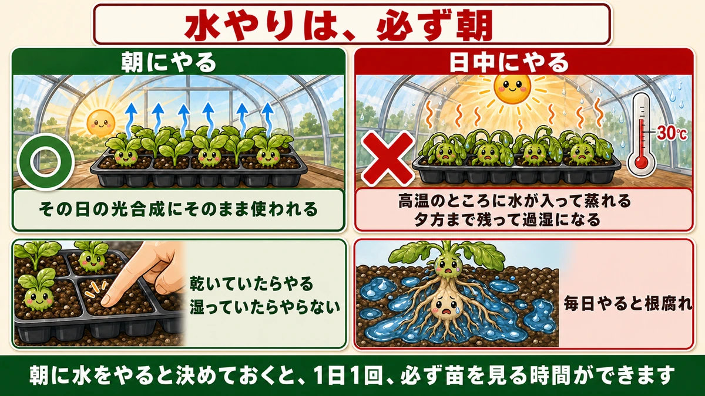

苗がひょろひょろになるのは、間引きが遅いからです🌱 中耕という作業
🗨️「芽は出たのに、ひょろひょろで倒れる」
🗨️「間引くのが、かわいそうでできない」
🗨️「水やりは、朝でも夜でも同じでしょ？」
どうも、8150（えいこう）です🌱 家庭菜園歴8年、理科の教員免許を持っていて、有機・無農薬で野菜を育てています。
前に、苗づくりのコツは3つだけ、という話をしました。冷蔵庫の上で発芽させて、簡易温室で育てて、油かす液肥を使う。
あれは★「どうやって芽を出させるか」の話でした。
今日はその続きです。★芽が出たあと、どうやってがっしりさせるか。
先に、この記事でいちばん言いたいことを言っておきます。
★苗がひょろひょろになるのは、間引きが遅いからです。
肥料でも、日当たりでもありません。混んでいることが原因です☺️

①間引きは、遅らせない
間引かないと、3つのことが起きる
間引きは、いちばんやりたくない作業です。せっかく出た芽を抜くわけですから。
でも、遅らせるとこうなります。
★1. 根張りが良くならない
土の中では、根も場所を取り合っています。隣の株と根が絡んでいる状態では、どちらも十分に広がれません。
★2. 通気性が悪くなり、病気の原因になる
葉が密集すると、風が通りません。湿気がこもったところは、カビの温床です。
★3. 日当たりの差で、徒長する株が出る
これがいちばん大きいです。
★混んでいると、光の奪い合いになる
植物には、隣の葉に日陰にされると★「もっと上へ伸びなければ」と反応するしくみがあります。
上に伸びる。その結果、茎が細く長くなる。これが徒長です。
つまり★徒長は、光が足りないから起きるのではなく、隣に負けているから起きます。
日当たりのいい窓辺に置いていても、セルトレイの中で混み合っていれば、その中で日陰になっている株が出ます。★場所の問題ではなく、密度の問題です。
1回目に間引くところ
最初の間引きでは、こういうところを優先します。
- ★混雑しているところ
- ★同じ穴から2本出ているところ
まず、★同じ場所から出ているものを1本にする。ここが最優先です。
タネをまくときに間隔をあけたつもりでも、どうしても2本出てしまう場所があります。そこを先に片づけます。
★残す株の選び方
残すのは、こういう株です。
- ★虫食いがない
- ★しっかり太くて、立派に育っている
- 葉の色が濃い
そして、★徒長したものは省きます。
ここで迷う方が多いのですが、★背が高いものが優秀なのではありません。むしろ逆です。★背が低くて、太くて、がっしりしているほうが良い苗です。

間隔は2cm
セルトレイやすじまきの場合、★2cm間隔になるように間引いていきます。
ひとつだけ注意点があります。★引っぱると、隣までつられて抜けます。
根が絡んでいるので、よくあります。私は残したい株のほうを指で押さえながら、抜きたい株を引くようにしています。心配なら、★ハサミで根元を切ってしまってもかまいません。
②中耕 ── いちばん知られていない作業
間引いたら、そのまま土をほぐす
中耕（ちゅうこう）という言葉を、聞いたことがあるでしょうか。
私は5年目くらいまで知りませんでした。★間引きとセットでやる作業です。
やり方は簡単です。
- ★株と株のあいだを、3〜4cmの深さで浅く耕す
- ★手でサクサクと、小刻みに
- 道具は要りません

★株元は耕さない
ひとつだけ、守ってほしいことがあります。
★株元は耕さないでください。
根が張っているのは株のすぐ下です。ここに指を入れると、育っている根を切ってしまいます。★あくまで、株と株のあいだだけです。
なぜ効くのか
土をほぐすだけで、3つのことが起きます。
- ★水はけが良くなる
- ★酸素を吸収しやすくなる
- ★根張りが良くなる
意外に思われるかもしれませんが、★根も呼吸しています。土が固まって空気が入らないと、根は息ができません。水をやりすぎると根が腐るのは、水そのものが悪いのではなく、★水が土の空気を追い出してしまうからです。
中耕は、土に空気の通り道を戻す作業です。
★間引き＋中耕＝病気予防
そして、この2つをセットでやると意味が変わります。
- 間引き → 地上の風通しが良くなる
- 中耕 → 地下の空気の通りが良くなる
★上も下も風通しが良くなるので、そのまま病気の予防になります。
農薬を使わない畑では、これがとても大きいです。★病気は、治すより起こさないほうがずっと簡単です。
③土寄せ ── 1cmで、倒れなくなる
中耕と、同時にやる
中耕でほぐした土を、そのまま株元に寄せます。
- ★両サイドから、株元へ
- ★やや少なめに、1cmほど
- 埋めてしまわないように
たった1cmです。それだけで、変わります。
なぜ倒れなくなるのか
苗が倒れる原因は、たいてい★根元のぐらつきです。
細い茎が地面から立ち上がっているところ。ここが風で揺すられ続けると、根の周りに隙間ができて、そこからぐらつきはじめます。
★株元に少し土を寄せておくと、この付け根が支えられます。1cmでも、支点が変わるので効きます。
★強い風に耐えられるようになりますし、安定するぶん根も張りやすくなります。
本葉が出たら、思い出すこと
前にお話ししたとおり、★本葉が出はじめるということは、タネの栄養を双葉が全部使い切ったということです。
ここから先は、外から栄養をもらうしかありません。かといって化成肥料をどんと入れると、一気に伸びて徒長します。
★油かす1に対して水9で薄めた液肥。だいたい1000倍。これをうすく続けるのが、いちばん失敗が少ないやり方です。
④★水やりは、必ず朝
時間帯で、結果が変わる
水やりは、いつやっても同じだと思っていました。違いました。
★育苗の水やりは、必ず朝にやってください。

朝がいい理由
★朝にやった水は、その日の光合成にそのまま使われます。
植物は、日が昇っている時間に光合成をします。そのとき水が必要です。朝のうちに水があれば、1日ぶんまるごと使えます。
日中がいけない理由
日中にやると、こうなります。
- ★簡易温室やトンネルの中が高温になっているところに水が入り、蒸れる
- ★夕方まで水分が残りすぎて、過湿になる
とくに簡易温室の中は、春先でも日中30℃を超えます。そこへ水を足すと、蒸し風呂です。
★毎日やるものではない
もうひとつ、大事なことがあります。
★水やりは、必ず毎日やるものではありません。
「乾いたらやる」。これが原則です。土の表面を指で触って、乾いていたらやる。まだ湿っていたら、やらない。
★湿っている状態に何度も水をやると、根腐れします。
さきほど書いたとおり、根は呼吸しています。ずっと水びたしでは、息ができません。かわいがって毎日やった結果、根を窒息させてしまう。これは私も一度やりました。
水やりのついでに、見る
朝に水をやると決めておくと、★1日1回、必ず苗を見る時間ができます。
- 徒長しはじめていないか
- 葉に虫がついていないか
- 混んできていないか
★間引きのタイミングを逃さないためには、この見る時間がいちばん効きます。
ポットへ移すタイミング
本葉が3〜4枚になったら
セルトレイで育てた苗は、どこかでポットに移します。
★本葉が3〜4枚になって、株が落ち着いたころが目安です。
セルトレイの1マスは小さいので、そのまま置いておくと根が回りきってしまいます。根が行き場を失うと、そこで生育が止まります。
移すときのコツ
- ★土を湿らせてから抜く（乾いていると根がちぎれる）
- 下から押し出すようにして、根鉢を崩さずに取り出す
- ポットの土に穴をあけて、そのまま置いて、まわりを埋める
★根を洗ったり、ほぐしたりしないでください。この時期の根は細くて、触るだけで切れます。
移したあとは、★2〜3日は直射日光を避けて、風の当たらないところに置きます。移植は苗にとって手術のようなものなので、回復の時間が要ります。
芽が出たあとの、4つの作業
この記事の要点
- ★苗がひょろひょろになるのは、間引きが遅いから
- 間引かないと ★根張りが悪い／通気性が悪く病気／★日当たりの差で徒長
- ★徒長は光が足りないからではなく、隣に負けているから起きる
- 1回目は★混雑しているところ・同じ穴から2本出ているところを優先
- 残すのは★虫食いがなく、太くて立派なもの。★徒長したものは省く
- ★背が高いものが優秀ではない。★低くて太いほうが良い苗
- 間隔は★2cm。引くと隣までつられるので、★ハサミで切ってもよい
- ★中耕＝株間を3〜4cmの深さで浅く耕す。手でよい
- ★★株元は耕さない（根を切る）
- 中耕の効果＝★水はけ／★酸素の吸収／★根張り
- ★根も呼吸している。水のやりすぎは、水が土の空気を追い出すから悪い
- ★間引き（地上）＋中耕（地下）＝そのまま病気予防
- ★土寄せは1cmでいい。株元の付け根が支えられて倒れなくなる
- 本葉が出たら★油かす1：水9の液肥をうすく続ける
- ★★水やりは必ず朝。その日の光合成にそのまま使われる
- 日中は★高温のところに水が入って蒸れ、★過湿になる
- ★毎日やるものではない。「乾いたらやる」
- 朝の水やりは★1日1回、苗を見る時間になる
- ポットへ移すのは★本葉3〜4枚。★根鉢を崩さない。移植後2〜3日は日陰で休ませる
全部やろうとしなくて大丈夫です。まずは今週末、セルトレイをのぞいて、同じ穴から2本出ているところだけ1本にしてください。それが第一歩です🌱
次回は、春の植え合わせの話。何と何を隣に植えると、お互いに助け合うのかをお話しします🌿
ここまで読んでくださって、ありがとうございました。
プラグトレー128穴
1マスが小さいので置き場所を取りません。ただし根が回りきると生育が止まるので、本葉が3〜4枚になったらポットへ移します。移すときは土を湿らせてから、根鉢を崩さずに。この時期の根は触るだけで切れます。
![[商品価格に関しましては、リンクが作成された時点と現時点で情報が変更されている場合がございます。]](https://hbb.afl.rakuten.co.jp/hgb/56d221a0.da732c49.56d221a1.b57a6709/?me_id=1230952&item_id=10006155&pc=https%3A%2F%2Fthumbnail.image.rakuten.co.jp%2F%400_mall%2Fnou-nou%2Fcabinet%2Fnousi2%2F0108007400004.jpg%3F_ex%3D240x240&s=240x240&t=picttext "[商品価格に関しましては、リンクが作成された時点と現時点で情報が変更されている場合がございます。]")

油かす
本葉が出はじめたら、油かす1に対して水9で薄めた液肥を。約1000倍です。化成肥料と違って効き方がゆるやかなので、一気に伸びて徒長することがありません。臭わないタイプなら室内でも平気です。
![[商品価格に関しましては、リンクが作成された時点と現時点で情報が変更されている場合がございます。]](https://hbb.afl.rakuten.co.jp/hgb/55e75fe5.20db4cd1.55e75fe7.d1ec32cc/?me_id=1194164&item_id=10000908&pc=https%3A%2F%2Fthumbnail.image.rakuten.co.jp%2F%400_mall%2Fgardening%2Fcabinet%2Fhiryousennyouhiryo%2Fomakase-1.jpg%3F_ex%3D240x240&s=240x240&t=picttext "[商品価格に関しましては、リンクが作成された時点と現時点で情報が変更されている場合がございます。]")
簡易温室（ビニールカバー付き）
発芽したあと、そのまま外に置くと育ちません。3月の外気では生育適温に届かないからです。ただし日中は30℃を超えるので、水やりは必ず朝に。日中にやると蒸し風呂になります。
![[商品価格に関しましては、リンクが作成された時点と現時点で情報が変更されている場合がございます。]](https://hbb.afl.rakuten.co.jp/hgb/56e737da.59472026.56e737db.311c7b4f/?me_id=1280948&item_id=10022268&pc=https%3A%2F%2Fthumbnail.image.rakuten.co.jp%2F%400_mall%2Fweiwei%2Fcabinet%2Fshouhin-image03%2Faah004-r.jpg%3F_ex%3D240x240&s=240x240&t=picttext "[商品価格に関しましては、リンクが作成された時点と現時点で情報が変更されている場合がございます。]")
土壌温度計
タネ袋の適温は気温ではなく地温です。空気が20℃でも土の中は12℃ということがあります。土に挿すだけで分かるものが1本あると、「まだ早い」「もういける」の判断がつきます。
![[商品価格に関しましては、リンクが作成された時点と現時点で情報が変更されている場合がございます。]](https://hbb.afl.rakuten.co.jp/hgb/56d214ed.82e55a39.56d214ee.0964bf9a/?me_id=1335769&item_id=10000348&pc=https%3A%2F%2Fthumbnail.image.rakuten.co.jp%2F%400_mall%2Fgood-item%2Fcabinet%2F06374369%2Fcompass1553596495.jpg%3F_ex%3D240x240&s=240x240&t=picttext "[商品価格に関しましては、リンクが作成された時点と現時点で情報が変更されている場合がございます。]")
種まき培土
畑の土ではなく、専用の培土を使ってください。細かくて水はけがよく、雑草のタネや病原菌が入っていません。まくときは先に水をまいてから。逆にするとタネが浮いて流れます。
![[商品価格に関しましては、リンクが作成された時点と現時点で情報が変更されている場合がございます。]](https://hbb.afl.rakuten.co.jp/hgb/55e75fe5.20db4cd1.55e75fe7.d1ec32cc/?me_id=1194164&item_id=10000034&pc=https%3A%2F%2Fthumbnail.image.rakuten.co.jp%2F%400_mall%2Fgardening%2Fcabinet%2Fyoudosenyoudo%2Fimg57203270.jpg%3F_ex%3D240x240&s=240x240&t=picttext "[商品価格に関しましては、リンクが作成された時点と現時点で情報が変更されている場合がございます。]")
あわせて読みたい